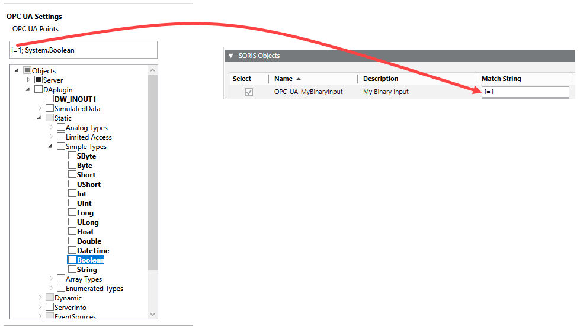
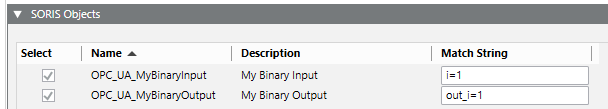

OPC UA Client Connectivity
The OPC UA Client extension allows configuring OPC UA southbound connectivity through the OPC UA adapter. The OPC Unified Architecture (OPC UA) is a communication protocol for industrial automation.

The adapter is not part of the Desigo CC installation. After installation, the adapter installer package (MSI) is available in \GMSMainProject\AddSW\OPC_UA_Client. Once you install and start this software service, the adapter is ready to be executed and used in Desigo CC. For instructions, see Installing and Starting the OPC UA Client Adapter.
Engineering for OPC UA Adapter
The OPC UA adapter can be configured in one of the following ways:
- Online engineering. In online configuration, the SORIS OPC UA Configurator tool must be connected to the OPC UA servers and then you can retrieve the OPC UA online data. For instructions, see Performing OPC UA Adapter Online Configuration.
- Offline engineering. In offline configuration, a JSON file is already available and contains OPC UA configuration data that you import, adjust, and export through the SORIS OPC UA Configurator tool. For instructions, see Performing OPC UA Adapter Offline Configuration.
To integrate the OPC UA adapter, a SORIS driver and a SORIS network (monitored by one SORIS driver) must be created and configured. For instructions, see Integrating OPC UA Connectivity.
Once the adapter object is created, it starts automatically as a Windows service using the http or https protocol. You can also start the adapter manually:
- Using the http protocol: double-click the executable Siemens.Gms.OpcUaAdapter.exe available in the file system with the installation.
- Using the https protocol: enter –secure:[thumbprint] by command line.
The OPC items will be then discovered by the OPC UA adapter.
Library
The OPC UA Client extension installs the Desigo CC library Global_OPC_UA_HQ_1, which is available at Project > System Settings > Libraries > L1-Headquarter > Global.
For more details, see OPC UA Symbols.
This library also provides a set of text groups to cover the different status information and the need of localizable texts for this integration.
OPC UA Library Customization
When customizing an OPC UA library, you must also export the data model. For instructions, in SORIS, see Export the Data Model.
NOTE: When you export the data model, in the Match string field of the SORIS Objects expander, you must enter the exact data type identifier, with the following format: i=[identifier]. You can find this information in the SORIS OPC UA Configurator tool, when you select a variable object in the tree in the OPC UA Settings section. See the following example, where the Boolean data type has identifier i=1.

If for the same data type you want to create two different data models (for example, Boolean Input and Boolean Output), in the SORIS Objects expander, do the following:
- To set Boolean Input, in the Match string field, enter i=1.
- The exported data model will be used for readable OPC UA variables only.
- To set the Boolean Output, in the Match string field, enter out_i=1.
- The exported data model will be used for writable OPC UA variables only.

Dependencies
The OPC UA Client extension is configured to depend on the following extension, which will be automatically added, if it is not already installed in the system, when the OPC UA Client installation feature is selected:
- SORIS Driver (see SORIS)